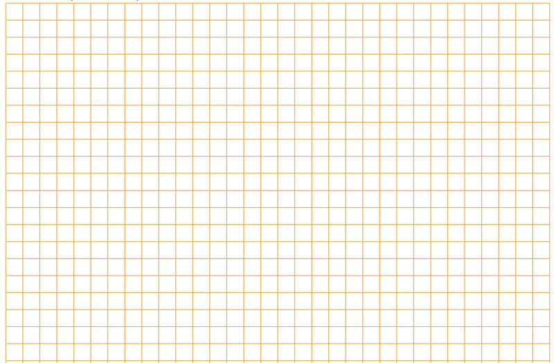

Hierdie lyne staan ook bekend as
soliede lyne. Hulle is effens dikker en
donkerder as konstruksielyne.
Figuur 5Figuur 6streepstippellyne
genoem.Figuur 7Figuur 8skaal te kan teken. Maar
hoe werk
dit?
Skaal 1:1 Dit is volskaal, en beteken een sentimeter in jou tekening wys een
sentimeter in die werklike lewe.
Skaal
1:2 Dit beteken dat ’n sentimeter in jou tekening twee sentimeter in die
werklike lewe aandui.
Figuur 9Figuur 10
Teken die voorwerp
volgens ’n skaal van 1:5 oor. Gebruik ’n liniaal om hierdie
tekening, en al die ander tekeninge in hierdie hoofstuk, te maak. Gebruik ’n
passer om die sirkel te teken.
Wys afmetings.
Wys die sirkel se hartlyne.
Wys die skaal.
Die dame sien
net die rooi
gedeelte van die blok. Maak ’n
skets van die rooi gedeelte op die
geruite blok hieronder.
Figuur 11

Maak ’n 1:10 skaaltekening van die
voorkant van hierdie voorwerp.
Wys weggesteekte lyne.
Wys afmetings.
Wys die skaal.
Figuur 12
Figuur 13: Skuinsaansig
Figuur 14: Isometriese tekening
Die woord “isometries” is
afgelei van die woorde “iso”
en “metries”. “Iso” beteken
“dieselfde” en “metries” verwys
na “afmetings”.
Maak ’n isometriese
tekening van die
krytdosie hier regs
op die isometriese
geruite blok. Gebruik
’n skaal van 1:2
Wys versteekte lyne.
Wys afmetings.
Wys die skaal.
Figuur 15
Maak ’n isometriese tekening van
die
klavier hier regs op die isometriese
geruite blok. Gebruik ’n skaal van 1:25.